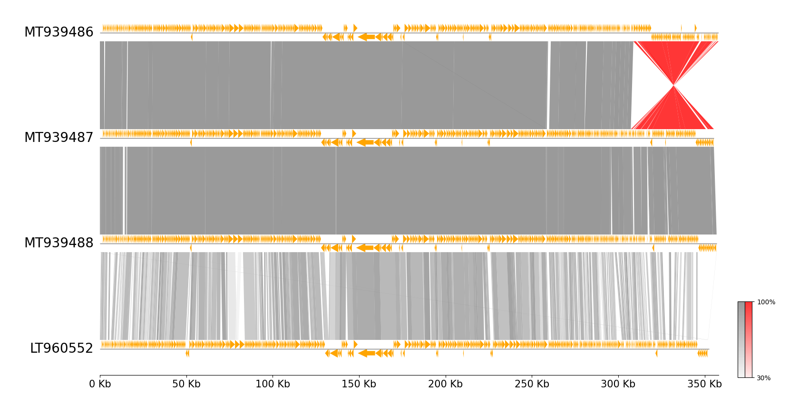
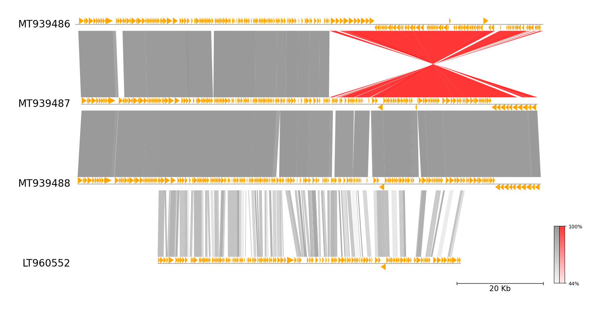
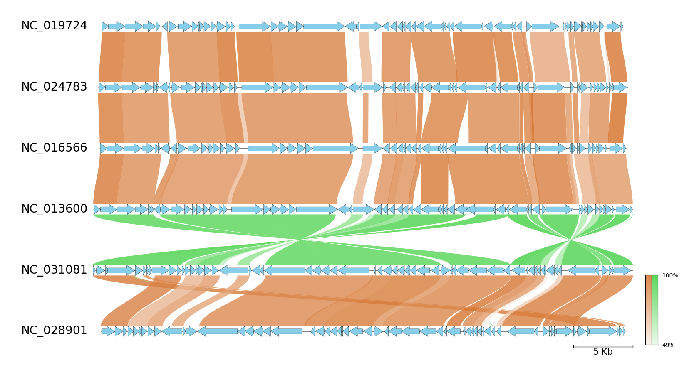

pgv-mummer CLI Document
pgv-mummer is one of the CLI workflows in pyGenomeViz for
visualization of genome alignment using MUMmer.

Installation
Additional installation of MUMmer is required.
Conda
conda install -c conda-forge -c bioconda pygenomeviz mummer
Pip (Ubuntu)
pip install pygenomeviz
In Ubuntu, MUMmer can be installed with apt command below.
sudo apt install mummer
Usage
Basic Command
pgv-mummer --gbk_resources seq1.gbk seq2.gbk seq3.gbk seq4.gbk -o mummer_example
Options
General Options:
--gbk_resources IN [IN ...] Input genome genbank file resources
User can optionally specify genome range and reverse complement.
- Example1. Set 100 - 1000 range 'file:100-1000'
- Example2. Set reverse complement 'file::-1'
- Example3. Set 100 - 1000 range of reverse complement 'file:100-1000:-1'
-o OUT, --outdir OUT Output directory
--format [ ...] Output image format ('png'[*]|'jpg'|'svg'|'pdf'|`html`[*])
--reuse Reuse previous result if available
-v, --version Print version information
-h, --help Show this help message and exit
MUMmer Alignment Options:
--seqtype MUMmer alignment sequence type ('protein'[*]|'nucleotide')
--min_length Min-length threshold to be plotted (Default: 0)
--min_identity Min-identity threshold to be plotted (Default: 0)
-t , --thread_num Threads number parameter (Default: MaxThread - 1)
Figure Appearence Options:
--fig_width Figure width (Default: 15)
--fig_track_height Figure track height (Default: 1.0)
--feature_track_ratio Feature track ratio (Default: 1.0)
--link_track_ratio Link track ratio (Default: 5.0)
--tick_track_ratio Tick track ratio (Default: 1.0)
--track_labelsize Track label size (Default: 20)
--tick_labelsize Tick label size (Default: 15)
--normal_link_color Normal link color (Default: 'grey')
--inverted_link_color Inverted link color (Default: 'red')
--align_type Figure tracks align type ('left'|'center'[*]|'right')
--tick_style Tick style ('bar'|'axis'|None[*])
--feature_plotstyle Feature plot style ('bigarrow'[*]|'arrow')
--arrow_shaft_ratio Feature arrow shaft ratio (Default: 0.5)
--feature_color Feature color (Default: 'orange')
--feature_linewidth Feature edge line width (Default: 0.0)
--pseudo Show pseudogene feature
--pseudo_color Pseudogene feature color (Default: 'grey')
--colorbar_width Colorbar width (Default: 0.01)
--colorbar_height Colorbar height (Default: 0.2)
--curve Plot curved style link (Default: OFF)
--dpi Figure DPI (Default: 300)
[*] marker means the default value.
Examples
Example 1
Download example dataset:
Download four Erwinia phage genbank files
pgv-download-dataset -n erwinia_phage
Run CLI workflow:
pgv-mummer --gbk_resources MT939486.gbk MT939487.gbk MT939488.gbk LT960552.gbk \
-o mummer_example1 --tick_style axis --align_type left --feature_plotstyle arrow
Example 2
Download example dataset:
Download four Erwinia phage genbank files
pgv-download-dataset -n erwinia_phage
Run CLI workflow:
Target range is specified (e.g. file:100-1000)
pgv-mummer --gbk_resources MT939486.gbk:250000-358115 MT939487.gbk:250000-355376 MT939488.gbk:250000-356948 LT960552.gbk:270000-340000 \
-o mummer_example2 --tick_style bar --feature_plotstyle arrow

Example 3
Download example dataset:
Download six Enterobacteria phage genbank files
pgv-download-dataset -n enterobacteria_phage
Run CLI workflow:
pgv-mummer --gbk_resources NC_019724.gbk NC_024783.gbk NC_016566.gbk NC_013600.gbk NC_031081.gbk NC_028901.gbk \
-o mummer_example3 --fig_track_height 0.7 --feature_linewidth 0.3 --tick_style bar --curve \
--normal_link_color chocolate --inverted_link_color limegreen --feature_color skyblue
